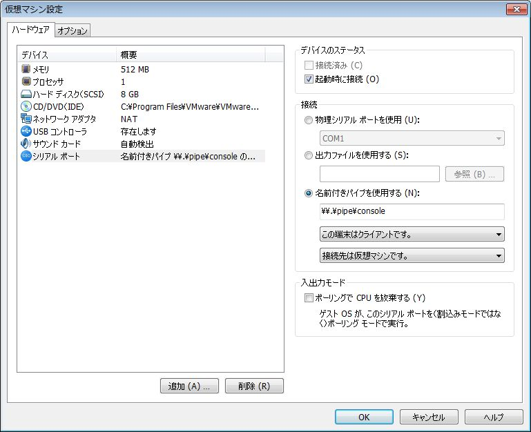
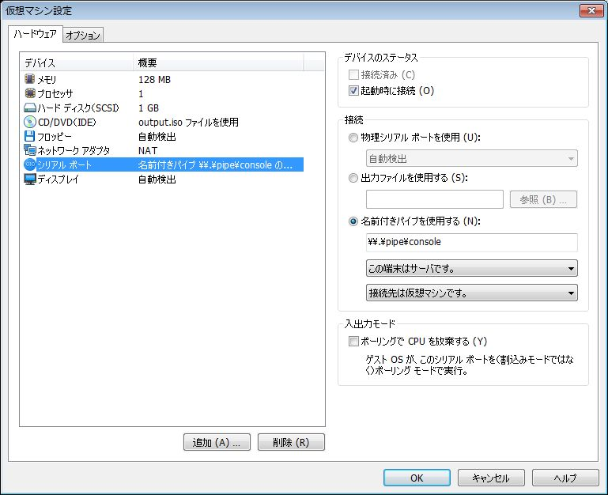

技術/Linux/手作りLinuxシステム/05. Boot from Network(PXE) (kernel-2.6.x)
カテゴリ: Linux
今回はPXE(Preboot Execution Environment)を使ったネットワークブートに挑戦してみます。ローカルHDDのマウントは考慮しません。
ステップ１：SYSLINUXの提供するPXE対応BootLoader, PXELINUXを使ってkernelと初期RAMディスク(initrd)をロードし、そのままinitrdをrootとしてマウントします。
kernelとinitrdは前回： 技術/Linux/手作りLinuxシステム/04. Boot from CD (kernel-2.6.x) と同じで、BootLoaderがISOLINUX(前回)からPXELINUX(今回)に切り替わっただけです。
ステップ２：ステップ３の下準備としてカーネルの起動時メッセージ(dmesgで確認できるアレ)をシリアルコンソールに表示させてみます。
ステップ３：rootファイルシステムをNFS経由でマウントしてます。
- ステップ１：kernel + initrdの構成をPXELINUXで起動してみる
- ステップ２：起動時メッセージをシリアルコンソールで確認できるようにする
- ステップ３：rootファイルシステムをNFSマウントしてみる
- その他の参考URL
ステップ１：kernel + initrdの構成をPXELINUXで起動してみる
PXEについて
参考：
- http://en.wikipedia.org/wiki/Preboot_Execution_Environment
- http://en.wikipedia.org/wiki/BOOTP
- http://syslinux.zytor.com/wiki/index.php/PXELINUX
- http://www.znet.or.jp/~clare/bsd/pxeboot.html
最初にPXEと周辺技術についてごく簡単にまとめておきます。
PXEはIntelによりまとめられた「仕様」であり、実装はBIOSベンダやネットワークカードのメーカに任されています。
PXEはDHCP, BOOTPなどネットワーク関連技術を活用し、カーネル等をDL・展開するプロトコルなどを規定しています。
PXEはロードされたカーネル(実際はPXELINUXなどのBootLoader)が引き続きネットワーク機能を使えるよう、各種APIを定義しています。
PXELINUXとは、PXEを使ってLinuxカーネルをロードし、ブートするためのプログラムになります。
PXEを使ったブート時の流れをごく簡単にまとめます。
- PXEに対応したターゲットマシンの電源がON, PXE処理開始
- DHCP/BOOTPでターゲットマシンのIPアドレス、BootLoaderファイル名、ダウンロード先TFTPサーバのIPアドレスを取得
- BootLoaderをTFTPサーバよりダウンロードし展開・実行
ここから先は、実行されるBootLoaderによってLinuxを起動したり、その他のOSを起動したりします。
PXELINUXの場合は、設定ファイルをTFTPサーバよりダウンロードし、bootプロンプトやメニューなどを表示します。
その後TFTPサーバよりLinuxカーネルやinitrdをダウンロードし、kernelの起動を開始します。
PXEによるネットワークブートを行う際、様々なWeb上の記事を参考にすると思います。
PXEが何であって何でないのか、それを把握しておくことで記事毎の細かい差異に振り回されず、無用なトラブルを回避できます。
DHCP, tftp, PXELINUXの設定と動作確認
PXELINUXに必要な構成要素：
- DHCP/BOOTP サーバ：CentOS 5.5 の ISC DHCP(Version 3) を使用
- TFTPサーバ：CentOS 5.5 の tftp, tftp-server パッケージを使用
- PXELINUX：CentOS 5.5 の syslinux-3.11 パッケージ提供の pxelinux.0 を使用
参考：
- mk-mode BLOG ≫ ＣｅｎｔＯＳ － ＰＸＥサーバ構築
- PXEを使ったネットワークブート
１．DHCP, tftp, syslinux等必要なパッケージをインストールしておきます。
２．tftpとPXELINUXの準備
CentOS 5.5, tftp-server-0.49 の場合はパッケージインストール時に
/tftpboot
ディレクトリが自動的に作成されます。また、xinetd用の設定ファイルも
/etc/xinetd.d/tftp
に作成されます。
tftpを有効化するには /etc/xinetd.d/tftp の
disable = yes
を
disable = no
に修正し、xinetdを再起動します。
細かい設定や動作確認については "man tftpd", "man tftp" を参照してください。
続いて pxelinux.0 を "/tftpboot/" の下にコピーします。
# rpm -ql syslinux | grep pxelinux /usr/lib/syslinux/pxelinux.0 # cp /usr/lib/syslinux/pxelinux.0 /tftpboot/
PXELINUXの設定ファイルを作成します。MACアドレスやIPで設定ファイルを分けることもできますが、今回は単一のdefaultというファイル名で設定ファイルを用意します。設定ファイルの分け方などはPXELINUXのドキュメントを参照してください。
# mkdir -p /tftpboot/pxelinux.cfg # vi /tftpboot/pxelinux.cfg/default
内容：
default linux label linux kernel bzImage append initrd=rootfs.gz root=/dev/ram0
３．DHCPを設定します。
今回、CentOS 5.5 と ターゲットマシンは両方共 VMware のNAT上で動作します。
VMware NAT でもDHCPを有効化しているので、それと重複しないIPアドレス範囲を設定しておきます。
allow booting;
allow bootp;
subnet 192.168.240.0 netmask 255.255.255.0 {
option domain-name "glamenv-septzen.net";
option broadcast-address 192.168.240.255;
option domain-name-servers 192.168.240.2;
option routers 192.168.240.2;
# TFTPサーバ IPアドレス
next-server 192.168.240.10;
# "/tftpboot" をルートとしたファイル名で指定
filename "/pxelinux.0";
# VMware NAT のDHCPと重ならないIPアドレス範囲
range dynamic-bootp 192.168.240.100 192.168.240.110;
}
ddns-update-style ad-hoc;
DHCPサービスを起動します。
# service dhcpd start # chkconfig --level 345 dhcpd on
４．PXLINUXの起動確認
この段階で、"/tftpboot/pxelinux.0" が起動することを確認してみます。
ターゲットマシンのVMware仮想マシンを開始してみます。
このようにPXELINUXの"boot:"プロンプトが表示されればOKです。
５．Linuxカーネルとinitrdの起動確認
技術/Linux/手作りLinuxシステム/04. Boot from CD (kernel-2.6.x) でISOイメージに格納した bzImage と rootfs.gz を "/tftpboot/" 以下に配置します。
/tftpboot/
pxelinux.0
bzImage
rootfs.gz
pxelinux.cfg/
default
これで起動してみます。(スクリーンショットは省略)
前回と同様にuClibc + BusyBox環境が立ち上がれば成功です。
ステップ２：起動時メッセージをシリアルコンソールで確認できるようにする
NFSのrootマウント絡みで問題が発生した場合、頼りになるのはコンソールに表示された起動時メッセージになります。
しかしディスプレイ画面ですと起動時メッセージはスクロールしてしまい、メッセージ全体を把握できません。ユーザーランドでshellが動き始めれば「Shift + PageDown/PageUp」でスクロールしたり dmesg コマンドで確認できますが、そもそもrootマウントに失敗すればユーザーランドも動きません。
そういう時に頼りになるのが、シリアルコンソール経由で取得できる起動時メッセージです。
というわけで、NFSをrootマウント出来るようにする下準備として、Linux Kernelの起動時メッセージをシリアルコンソールで確認できるようにしてみます。
シリアルコンソールからのログインについてはユーザーランドに関わるため、本記事では取り扱いません。
仮想マシンのシリアルポート設定
今回はホストマシン、ターゲットマシン共にVMware上で動かしています。VMware自体のホストOSはWin7です。
そこで、両方のマシンにシリアルポートデバイスを追加しておきます。
物理ポートではなく、Windowsの名前付きパイプを使います。
ホストマシン(CentOS 5.5)：

".vmx"ファイルの設定：
serial0.present = "TRUE" serial0.fileType = "pipe" serial0.fileName = "\\.\pipe\console" serial0.pipe.endPoint = "client"
ターゲットマシン：

".vmx"ファイルの設定：
serial0.present = "TRUE" serial0.fileType = "pipe" serial0.fileName = "\\.\pipe\console" serial0.pipe.endPoint = "server"
Linux Kernelの設定
次のオプションを有効にして、bzImageを再コンパイルします("make bzImage")。
CONFIG_SERIAL_8250 CONFIG_SERIAL_8250_CONSOLE
"make menuconfig"からは以下の階層を辿ります。
Device Drivers --->
Character devices --->
Serial drivers
出来上がったbzImageは、"bzImageSer"など区別しやすい名前で "/tftpboot" の下にコピーしておきます。
PXELINUXの設定
"/tftpboot/pxelinux.cfg/default" にシリアルコンソール用のカーネルとカーネルパラメータを指定したエントリを追加します。
prompt 1 label linux kernel bzImage append initrd=rootfs.gz root=/dev/ram0 label sercons kernel bzImageSer append initrd=rootfs.gz root=/dev/ram0 console=ttyS0,115200 console=tty0
今回はディスプレイ画面とシリアルポートの両方に起動時メッセージを出力したいので、"console="を二つ指定してみました。
二つ以上の"console="指定があると、最後に指定されたデバイスが "/dev/console" になります。ユーザーランドのシェルなどはディスプレイ画面とキーボード、つまり tty0 を使いたいので、"console=tty0"を最後に指定しています。
シリアルコンソールの詳細は "Documentation/serial-console.txt" を参照してください。
minicomの設定
Linuxでシリアルコンソールに接続するためのツールとしては kermit と minicom が著名なようです。
今回ホストマシンとして使用する CentOS 5.5 では、minicomをパッケージとして提供しています。
というわけで、minicomを使ってシリアルコンソールに接続するための設定を行います。
最初にminicomをインストールしておいてください。
# yum install minicom
ttyS0用の設定を作成します。minicomを設定モードで起動します。日本語化されていますが、minicomの画面レイアウトが崩れたり文字化けしてしまい、使いづらいです。そのため、英語モードで起動するよう "LANG=C" を指定します。
# LANG=C minicom -s
┌─────[configuration]─┐ │ Filenames and paths │ │ File transfer protocols │ │ Serial port setup │ │ Modem and dialing │ │ Screen and keyboard │ │ Save setup as dfl │ │ Save setup as.. │ │ Exit │ │ Exit from Minicom │ └────────────―─┘
"Serial port setup" を選択して適当にセットアップします。
┌───────────────────── │ A - Serial Device : /dev/ttyS0 │ B - Lockfile Location : /var/lock │ C - Callin Program : │ D - Callout Program : │ E - Bps/Par/Bits : 115200 8N1 │ F - Hardware Flow Control : Yes │ G - Software Flow Control : No │ │ Change which setting? └─────────────────────
"Modem and dialing"機能は使わないので、モデム向けの各種送信文字列を空にしておきます。
┌────[Modem and dialing parameter setup]────────────── │ │ A - Init string ......... │ B - Reset string ........ │ C - Dialing prefix #1.... │ D - Dialing suffix #1.... │ E - Dialing prefix #2.... │ F - Dialing suffix #2.... │ G - Dialing prefix #3.... │ H - Dialing suffix #3.... │ I - Connect string ...... │ J - No connect strings .. │ │ K - Hang-up string ...... │ L - Dial cancel string .. │ │ M - Dial time ........... 45 Q - Auto bps detect ..... No │ N - Delay before redial . 2 R - Modem has DCD line .. Yes │ O - Number of tries ..... 10 S - Status line shows ... DTE speed │ P - DTR drop time (0=no). 1 T - Multi-line untag .... No │ │ Change which setting? (Return or Esc to exit) └────────────────────────────────────
"Save setup as.."を選択し、"ttyS0"という名前で保存します。
┌────────────────────┐ │Give name to save this configuration? │ │> ttyS0 │ └────────────────────┘
ファイルの実体は "/etc/minirc.ttyS0" になります。
"Exit from Minicom" で一旦終了します。
minicomの設定・使い方参考：
- minicomの使い方 - パパ日記
- シリアル接続による開発ボードの動作確認 － ＠IT MONOist
- minicomでシリアル通信 - 3日目の坊主
- DEBUG HACKS, HACK#16, 「minicomでシリアルコンソール接続を行う」
minicom, kermitについてはWebで調べると沢山記事が出てくるので、適当に調べてみてください。
動作確認
まずホストマシン側でminicomを起動します。
# LANG=C minicom ttyS0
これで先ほど設定を保存した "/etc/minirc.ttyS0" を読み込んでminicomが起動します。
続いて minicom 上で行の折り返しを有効にします。
"Ctrl+A" -> "W"
で有効になります。小文字の"w"だと無効になります。
次にVMwareのターゲットマシンを起動します。"boot:"プロンプトで、"console="を追加したラベルを指定します。
全てが上手く行けば、minicomで起動時メッセージが表示されます：
Linux version 2.6.38.2 (msakamoto@siranui.localdomain) (gcc version 4.1.2 200807
04 (Red Hat 4.1.2-48)) #1 Thu Apr 28 13:45:04 JST 2011
BIOS-provided physical RAM map:
BIOS-e820: 0000000000000000 - 000000000009f400 (usable)
BIOS-e820: 000000000009f400 - 00000000000a0000 (reserved)
BIOS-e820: 00000000000ca000 - 00000000000cc000 (reserved)
BIOS-e820: 00000000000dc000 - 00000000000e4000 (reserved)
BIOS-e820: 00000000000e8000 - 0000000000100000 (reserved)
BIOS-e820: 0000000000100000 - 0000000007ef0000 (usable)
BIOS-e820: 0000000007ef0000 - 0000000007eff000 (ACPI data)
BIOS-e820: 0000000007eff000 - 0000000007f00000 (ACPI NVS)
BIOS-e820: 0000000007f00000 - 0000000008000000 (usable)
BIOS-e820: 00000000e0000000 - 00000000f0000000 (reserved)
BIOS-e820: 00000000fec00000 - 00000000fec10000 (reserved)
BIOS-e820: 00000000fee00000 - 00000000fee01000 (reserved)
BIOS-e820: 00000000fffe0000 - 0000000100000000 (reserved)
Notice: NX (Execute Disable) protection cannot be enabled: non-PAE kernel!
DMI present.
Hypervisor detected: VMware
last_pfn = 0x8000 max_arch_pfn = 0x100000
x86 PAT enabled: cpu 0, old 0x0, new 0x7010600070106
init_memory_mapping: 0000000000000000-0000000008000000
RAMDISK: 07d6d000 - 07ed0000
0MB HIGHMEM available.
128MB LOWMEM available.
mapped low ram: 0 - 08000000
low ram: 0 - 08000000
Zone PFN ranges:
DMA 0x00000010 -> 0x00001000
Normal 0x00001000 -> 0x00008000
HighMem empty
Movable zone start PFN for each node
early_node_map[3] active PFN ranges
0: 0x00000010 -> 0x0000009f
0: 0x00000100 -> 0x00007ef0
0: 0x00007f00 -> 0x00008000
Allocating PCI resources starting at 8000000 (gap: 8000000:d8000000)
Built 1 zonelists in Zone order, mobility grouping on. Total pages: 32383
Kernel command line: initrd=rootfs.gz root=/dev/ram0 console=ttyS0,115200 consol
e=tty0 BOOT_IMAGE=bzImageSer
PID hash table entries: 512 (order: -1, 2048 bytes)
Dentry cache hash table entries: 16384 (order: 4, 65536 bytes)
Inode-cache hash table entries: 8192 (order: 3, 32768 bytes)
Initializing CPU#0
Initializing HighMem for node 0 (00000000:00000000)
Memory: 126156k/131072k available (1003k kernel code, 4400k reserved, 354k data,
208k init, 0k highmem)
virtual kernel memory layout:
fixmap : 0xfffe5000 - 0xfffff000 ( 104 kB)
pkmap : 0xff800000 - 0xffc00000 (4096 kB)
vmalloc : 0xc8800000 - 0xff7fe000 ( 879 MB)
lowmem : 0xc0000000 - 0xc8000000 ( 128 MB)
.init : 0xc1154000 - 0xc1188000 ( 208 kB)
.data : 0xc10faf2b - 0xc1153aa0 ( 354 kB)
.text : 0xc1000000 - 0xc10faf2b (1003 kB)
Checking if this processor honours the WP bit even in supervisor mode...Ok.
SLUB: Genslabs=15, HWalign=64, Order=0-3, MinObjects=0, CPUs=1, Nodes=1
NR_IRQS:16
Console: colour VGA+ 80x25
console [tty0] enabled
console [ttyS0] enabled
TSC freq read from hypervisor : 3059.060 MHz
Detected 3059.060 MHz processor.
Calibrating delay loop (skipped) preset value.. 6118.12 BogoMIPS (lpj=12236240)
pid_max: default: 32768 minimum: 301
Mount-cache hash table entries: 512
CPU: Intel(R) Core(TM) i3 CPU 540 @ 3.07GHz stepping 02
Performance Events: Westmere events, Broken PMU hardware detected, using softwar
e events only.
bio: create slab <bio-0> at 0
Switching to clocksource pit
Unpacking initramfs...
Freeing initrd memory: 1420k freed
platform rtc_cmos: registered platform RTC device (no PNP device found)
io scheduler noop registered (default)
Serial: 8250/16550 driver, 4 ports, IRQ sharing disabled
serial8250: ttyS0 at I/O 0x3f8 (irq = 4) is a 16550A
serial8250: ttyS1 at I/O 0x2f8 (irq = 3) is a 16550A
serio: i8042 KBD port at 0x60,0x64 irq 1
serio: i8042 AUX port at 0x60,0x64 irq 12
mousedev: PS/2 mouse device common for all mice
Freeing unused kernel memory: 208k freed
input: AT Translated Set 2 keyboard as /devices/platform/i8042/serio0/input/inpu
t0
Switching to clocksource tsc
minicomを終了する：
"Ctrl-A" -> "q"
ステップ３：rootファイルシステムをNFSマウントしてみる
これまでrootファイルシステムはinitrdをそのまま使っていました。initrdをそのまま使う場合のデメリットとして、ファイル構成を変更する度にloopbackマウントしたり、Buildrootでmakeする必要がありました。
しかしPXEでネットワークブートが可能になった今、NFSでRootFSをマウントすることでこれらinitrdのデメリットを回避することができます。ホストマシン上でのファイル変更が、ターゲットマシンでもすぐに利用可能で、initrdの時のような中間ステップが不要になります。
NFSの基本や仕組みについては割愛します。適宜Webで調べておいてください。
参考：
- NFS-Root mini-HOWTO
- Linux NFS-HOWTO
NFSサーバの準備
今回のホストマシン CentOS 5.5 では、パッケージをインストールするだけでNFSサーバとして利用できます。
次のパッケージをインストールして下さい。
nfs-utils nfs-utils-lib
インストール後、exportsするディレクトリを用意します。とりあえず空のディレクトリを用意してみます。
# mkdir -p /opt/nfsexports/root1
"/etc/exports" に設定します。
# cat /etc/exports /opt/nfsexports/root1 *(rw,sync,no_root_squash)
NFSサービスを起動します。
# service nfs start NFS サービスを起動中: [ OK ] NFS クォータを起動中: [ OK ] NFS デーモンを起動中: [ OK ] NFS mountd を起動中: [ OK ] RPC idmapd を起動中: [ OK ]
マウントして動作確認してみます。
# mkdir -p /mnt/nfstest # mount -t nfs localhost:/opt/nfsexports/root1 /mnt/nfstest
"/mnt/nfstest" 内でファイルを作成してみて、 "/opt/nfsexports/root1/" 以下からもアクセスできることを確認して下さい。
/var/log/messages : mount時
... mountd[xxx]: authenticated mount request from 127.0.0.1:764 for /... (/...)
/var/log/messages : umount時
... mountd[xxx]: authenticated unmount request from 127.0.0.1:775 for /... (/...)
NFSとTCP Wrappersのアクセス制御について
NFSはRPC(Remote Procedure Call)を使っています。
ディストリビューションやNFSのバージョンによっては、アクセス制御をTCP Wrappersを使って実現している場合があります。
今回のホストマシン CentOS 5.5 では設定する必要がありませんでしたが、場合によっては
/etc/hosts.allow, /etc/hosts.deny
ファイルを編集する必要があるかもしれません。
ディストリビューションのパッケージにより配布されているドキュメントやmanページを入念にチェックし、もし他にLinuxマシンを用意できるのであれば、まずは外部Linuxマシンから問題なくmount出来ることを確認しておいてください。
CentOS 5.5の場合、以下のmanページに /etc/hosts.allow, hosts.deny ファイルの編集内容が記載されています。
$ man rpc.mountd $ man rpc.statd
ルートファイルシステムの準備
上で用意した
/opt/nfsexports/root1
の中にルートファイルシステムを準備します。
これまで使ってきた initrd は、 技術/Linux/手作りLinuxシステム/04. Boot from CD (kernel-2.6.x) でBuildrootを使ってgzipされたcpioイメージでした。
よって、このinitrdをそのままgunzipしてcpioで展開すればOKです。
あるいはBuildrootのビルドディレクトリの "images" ディレクトリの中に、gzipする前のcpioファイルがありますので、これを使っても構いません。
さらに、Buildrootのオプションとしてルートファイルシステムをtarボールで作成することも可能です。
何種類か方法が用意されていますが、最終的に"images/"の下に作成されたルートファイルシステムのアーカイブなりイメージファイルを展開出来ればOKです。
cpioアーカイブの場合の展開例：rootユーザで展開してください。
# cd /opt/nfsexports/root1 # cpio -i < /home/msakamoto/reduced.linux/04_cdboot/br/images/rootfs.cpio
Linux Kernelの設定
NFSをrootマウントするためにkernel設定を変更します。
大きく３つのパートに分かれます。
- ネットワークカードのデバイスドライバの組み込み
- kernel起動時のIPスタック機能
- NFSファイルシステムとrootマウント
順に見ていきます。
ネットワークカードのデバイスドライバの組み込み
今回は VMware Workstation 7 上の仮想マシンを使います。
その場合、ネットワークカード(=ネットワークアダプタ)は AMD PCNET PCI アダプタまたは Intel Pro/1000 MT サーバアダプタとしてゲストOSに認識されます。
これまでのVMwareの使用してきた経験上、殆どのLinuxディストリビューションで pcnet32 モジュール(=AMD PCNET PCI アダプタ相当)が自動認識され、利用できています。
今回もこれに倣い、pcnet32を組み込みます。
"make menuconfig"の検索機能で"PCNET32"を検索した結果です（以降、"[=y]", "[=n]"など現在設定を示す出力は削除しています）
Symbol: PCNET32
Type : tristate
Prompt: AMD PCnet32 PCI support
Defined at drivers/net/Kconfig:1381
Depends on: NETDEVICES && NET_ETHERNET && NET_PCI && PCI
Location:
-> Device Drivers
-> Network device support (NETDEVICES)
-> Ethernet (10 or 100Mbit) (NET_ETHERNET)
-> EISA, VLB, PCI and on board controllers (NET_PCI)
Selects: CRC32 && MII
"Depends on" の行の依存性をクリアしないと、このオプションを組み込むことが出来ません。
"NETDEVICES", "NET_ETHERNET", "NET_PCI" については"Device Drivers"以下の階層を辿れば組み込めます。
"PCI"については "Bus options" -> "PCI Support" を組み込みます。
Symbol: PCI
Type : boolean
Prompt: PCI support
Defined at arch/x86/Kconfig:1859
Location:
-> Bus options (PCI etc.)
Selects: ARCH_SUPPORTS_MSI
"PCI"組み込んだあと、"Device Drivers"以下を辿っていけば、必要なオプションを組み込めるはずです。
逆に "PCI" を組み込んでいない状態では、"make menuconfig"の設定画面で上記オプションが表示されず、組み込めないようになっています。
参考：
- Linux Ethernet-Howto
kernel起動時のIPスタック機能
起動時にDHCPやBOOTPで自分のIPアドレスを決定する機能を組み込みます。
CONFIG_IP_PNP_DHCP CONFIG_IP_PNP_BOOTP
上記オプションを組み込んでください。
参考：CONFIG_IP_PNP_DHCPを"make menuconfig"で検索したときの情報です。
Symbol: IP_PNP_DHCP [=y]
Type : boolean
Prompt: IP: DHCP support
Defined at net/ipv4/Kconfig:154
Depends on: NET [=y] && INET [=y] && IP_PNP [=y]
Location:
-> Networking support (NET [=y])
-> Networking options
-> TCP/IP networking (INET [=y])
-> IP: kernel level autoconfiguration (IP_PNP [=y])
NFSファイルシステムとrootマウント
NFSファイルシステムを組み込みます。CONFIG_NFS_FSを組み込むことで、SUNRPCなどその他必要なオプションも組み込まれます。
Symbol: NFS_FS
Type : tristate
Prompt: NFS client support
Defined at fs/nfs/Kconfig:1
Depends on: NETWORK_FILESYSTEMS && INET && FILE_LOCKING
Location:
-> File systems
-> Network File Systems (NETWORK_FILESYSTEMS)
Selects: LOCKD && SUNRPC && NFS_ACL_SUPPORT
"CONFIG_NFS_V3" は組み込まなくとも問題有りませんでした。
また、今回使用した 2.6.38.2 ではCONFIG_NFS_FSを組み込むと自動的に CONFIG_RPCSEC_GSS_KRB5 ("Secure RPC: Kerberos V mechanism")も有効化されました。
rootファイルシステムをNFSマウントするためにCONFIG_ROOT_NFSを組み込みます。
Symbol: ROOT_NFS
Type : boolean
Prompt: Root file system on NFS
Defined at fs/nfs/Kconfig:90
Depends on: NETWORK_FILESYSTEMS && NFS_FS && IP_PNP
Location:
-> File systems
-> Network File Systems (NETWORK_FILESYSTEMS)
以上のオプションを組み込んだら、"make bzImage"でbzImageをリビルドします。
出来上がったbzImageは、"bzImageNfs"など区別しやすい名前で "/tftpboot" の下にコピーしておきます。
NFS rootマウントするとき、Buildroot, BusyBox, uClibc側で特別な設定は必要か？
Linux Kernelの設定が適切であれば、uClibc, BusyBox, Buildroot側で特別な設定は必要ないようです。
参考：
- [Buildroot] [PATCH] docs/howto: add howto for nfsroot
- Using Buildroot on Nitrogen ≪ Boundary Devices
PXELINUXの設定
"/tftpboot/pxelinux.cfg/default" にNFSマウント用のカーネルとカーネルパラメータを指定したエントリを追加します。
追加分："append"の行は、実際は折り返し無しで一行で記述します。
label nfs
kernel bzImageNfs
append console=ttyS0,115200 console=tty0 \
root=/dev/nfs rw ip=dhcp nfsroot=192.168.240.10:/opt/nfsexports/root1
"192.168.240.10"は実際のVMwareホストマシン(CentOS5.5)のIPアドレスに読み替えてください。
"ip=", "nfsroot="のカーネルパラメータに付いてはカーネルソースの
Documentation/filesystems/nfs/nfsroot.txt
に詳しく書かれています。
"root=/dev/nfs"については、実際に"/dev/nfs"というデバイスノードを作成する必要はありません。単に"NFSrootマウントをします"という印です。
最初のうちは
nfsrootdebug
を追加して、NFSマウントのデバッグメッセージを出力するとよいでしょう：
label nfsdebug
kernel bzImageNfs
append console=ttyS0,115200 console=tty0 \
root=/dev/nfs rw ip=dhcp nfsroot=192.168.240.10:/opt/nfsexports/root1 \
nfsrootdebug
動作確認
minicomを立ち上げた後、VMware仮想マシンを起動します。
"boot:"プロンプトが表示されたら、NFSroot用のboot labelを指定してシステムを立ち上げてみます。
全てが成功したときの起動時メッセージの例：(nfsrootdebugパラメータを有効化しています)
NFSrootマウント出来ないときは
NFSrootマウントに失敗する場合、いくつかの原因が考えられます。
これまで解説してきた手順に従っているかもう一度チェックしてみてください。
自分の場合、ネットワークカードのデバイスドライバを組み込むことに気づかず、数日を費やしました。
・・・多くの記事では、どうもこの事が誰でも気づくような当然の前提として省略されているようです。
さらに、「もしかして・・・誰も書いてないけど・・・当たり前すぎて誰も書いてないくらいの前提として・・・ネットワークカードのデバイスドライバを組み込まないと駄目？」とようやく気づいたあとも、「じゃぁどれを組み込めば良いの？」で半日ほど嵌ってしまいました。
CONFIG_PCNET32に気づかない → CONFIG_PCI に気づかない → 適切なデバイスドライバの選択肢がそもそも make menuconfig で表示されない → 以下ループ
という無限地獄に陥り、ようやく抜けだしたのが「そういえば、今までVMwareでLinux使ってきた時って、"pcnet32"モジュールでだいたい上手く動いてたよな」と思い出してからです。そこでようやくCONFIG_PCNET32に辿り着き、そこから全てがスムーズに動き出しました。
ネットワークカードのデバイスドライバを組み込まず、失敗したときの起動時メッセージの例：(nfsrootdebugパラメータを有効化しています)
"IP-Config: ..." でちゃんとDHCPからIPアドレスを取得しているか？がポイントになると思います。これが出来ていないと、そもそもネットワークカードを認識していない可能性があります。
本シリーズではallnoconfig を出発点として、最低限必要なkernelオプションを少しずつ組み込んでいくスタイルですので、このように「当たり前すぎてわざわざドキュメントに書く必要すら無い暗黙の前提」を知らずに躓くパターンに注意が必要です。
・・・というか本シリーズで躓いて時間を取られたのは大体このパターンでした。
その他の参考URL
他、VMware + PXEブートなど参考資料：
- PXE boot with vmware - りおてく
- VMwareでゲストOSをネットワークブートするためのメモ - NightWalker の日記
- ウノウラボ Unoh Labs: Linuxをネットワーク経由で自動インストールする方法（前編）
- PXEを使ったネットワークブート
- CS411 - PXE Boot in VMware How To
- ITmedia エンタープライズ : Linux Tips「ネットワークブートインストールをしたい」
- Murao Lab. - ネットブートLinuxシステム構築メモ
ここまでで、FDブート/CDブート/PXEネットワークブートを網羅できました。
次回は仕上げとして、PXEネットワークブート後にホストマシンからKGDBでターゲットマシンのkernelをデバッグしてみます。